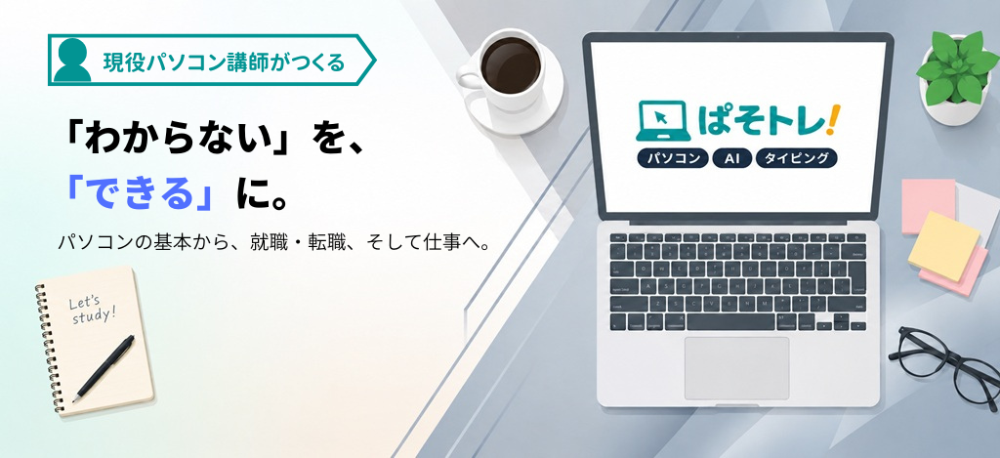
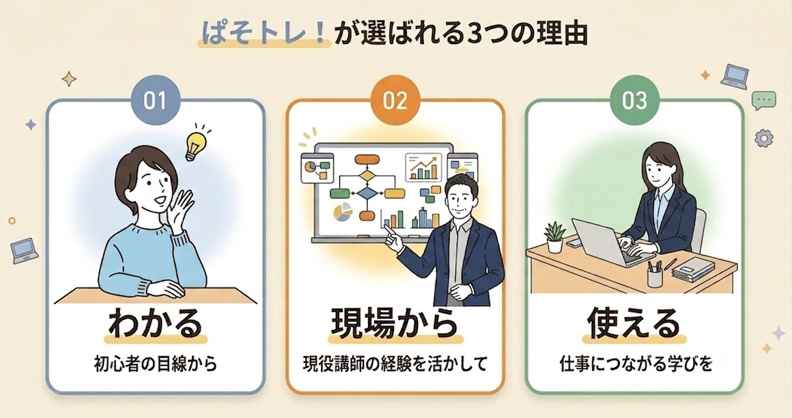

ぱそトレ！は、パソコン初心者が「できる」を積み重ね、就職と仕事につなげる学習サイトです。
✔現役講師が監修
✔初心者がつまずくポイントを解説
✔実務で使えるスキルが身につく
✔就職・転職・仕事で役立つAI活用
ぱそトレ！で 「できる」ようになること
パソコンの基本から、就職・転職活動、就職後の実務まで。あなたの「できる」を広げます。
01
STEP 1
パソコンの基本を習得
すべての土台となるスキルを習得します。
- 文字入力の基本
 タイピング
タイピング - 操作の基本
 Windows
Windows - 文書作成の基本
 Word
Word - 表計算の基本
 Excel
Excel
02
STEP 2
就職・転職に活かす
身につけたスキルを評価につなげます。
- スコアアップタイピングテスト対策
- 書き方のポイント
 履歴書・職務経歴書
履歴書・職務経歴書 - 伝え方のコツ
 企業研究・自己PR
企業研究・自己PR
AIは、仕事を始める前も、始めた後も使える道具です
就職・転職活動では「自分を伝えるため」に。
仕事では「仕事を進めるため」に。
目的に合わせて
使い分ける
こんなことで困っていませんか？
あなたの今の悩みから、必要な学習を探せます。
ぱそトレ！の7つのカテゴリー
パソコンの基本から、就職・転職、実際の仕事で役立つ知識まで。目的に合わせて、必要な情報を見つけられます。
人気コンテンツ
ぱそトレ！で、今よく読まれている記事
News
新しい練習メニューの追加や、学習に役立つ大切なお知らせ
｜「ぱそトレ！」公式サイトを全面リニューアル。実務特化型の学習サイトへと進化しました
｜パソコン初心者のための学習サイト「ぱそトレ！」がオープンしました
